- Installation / Updates
- Import Sample Content
- Home & Blog Page
- Menu System / Anchor Menus
- Theme Options / Philosophy
- Typography Options
- Page Options
- Post Options
- Portfolio Options
- Rows & Columns
- Elements
- Sidebars / Widgets
- Image Sizes
- SEO (Search Engine Optimization)
- Translation & WPML Multilingual Plugin
- CSS & Javascript files
- Sources and Credits
Installation
Before all else, you must setup a WordPress version on your server. After downloading the package, you will have "Fildisi" folder and "fildisi.zip" file inside the Theme package. You can either choose to upload the Theme to your server via ftp (just upload the folder "Fildisi" into the folder wp-content/themes) or via WordPress upload function (Appearance > Themes > Install Themes > Upload) using the "fildisi.zip" file.Install via WP upload function
- Download "All Files and Documentation" package from Themeforest and unzip it.
- In unzipped folder, you will find fildisi.zip file. Keep it as it is, do not unzip it again.
- In your WordPress Dashboard go to Appearance > Themes.
- Click on Add New Theme, click Upload Theme and browse the fildisi.zip file and click Install Now.
- After installation is complete click on Activate Theme. You are ready.
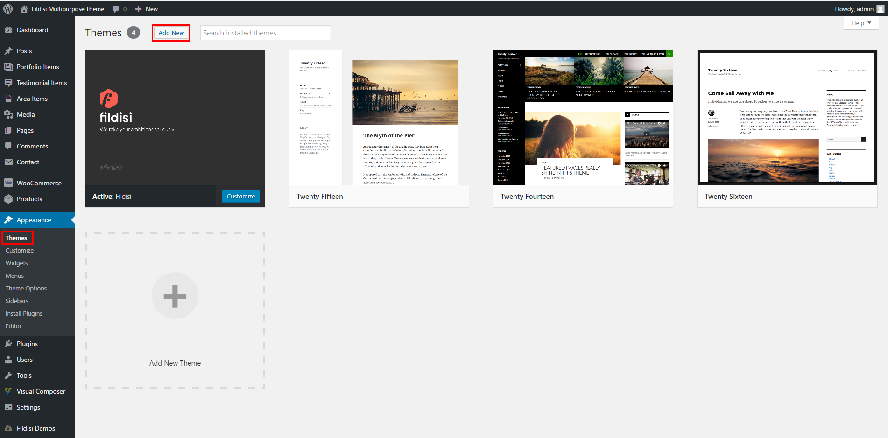
Install via FTP
- Download ZIP package from Themeforest and unzip it.
- In unzipped folder, you will find fildisi.zip file. Please unzip it again.
- Upload the unzipped folder in wp-content/themes directory.
- After this go to Appearance/Themes and activate the theme. You are ready.
After the installation of Fildisi Theme please install the required plugins: Visual Composer, Fildisi Extension Plugin and Contact Form 7. Especially without the Visual Composer and the Fildisi Extension you won’t be able to use most of our elements.
Updates
Keep in mind that we provide lifetime updates and dedicated support in order to have no problems with the new versions of WP. Besides that, Fildisi offers new features in every new release. So please, stay updated.How to use the Fildisi Theme auto Update
This is for sure the easiest and fastest way to update Fildisi. The only thing you have to do is to activate the theme update and enter your Themeforest username and an API key (from Envato).Follow the steps below in order to use the auto update:
- Go Theme Options > Theme Update
- Enable Theme Update
- Insert your Themeforest username and an API key from your Envato account
- Save changes and you're ready.
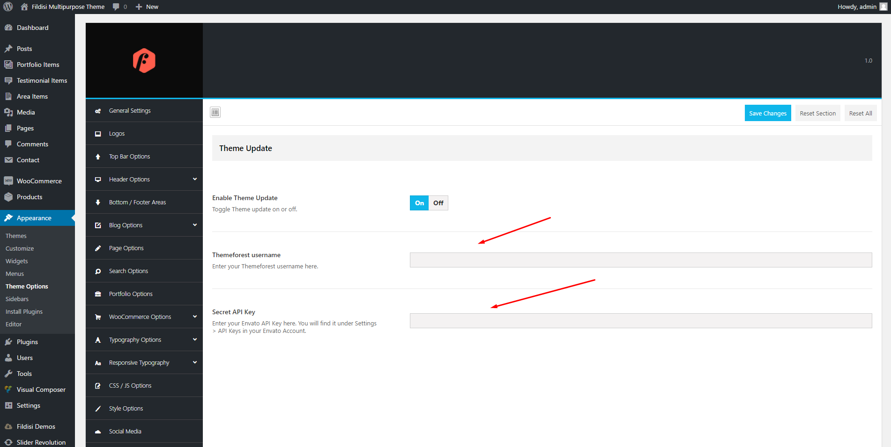
How to update Fildisi (old-school method)
This is the old-school method for the updates of Fildisi.Follow the steps below:
- Deactivate Fildisi - (activate one of the WP themes like Fourteen)
- Delete Fildisi
- Upload and install the new version of Fildisi, then activate it.
- If you won't get an info message prompting you to update one or both of the required plugins of Fildisi (Visual Composer and Fildisi Extension) you're ready.
In case you prompt to update any or both of the required plugins (Visual Composer and/or Fildisi Extension)
- Click on Updating Plugins
- Check these plugins and Update
- You're ready to go!
Import Sample Content
With Fildisi you have the possibility to import any of the demos with just ONE click. Just follow the steps below:- Install and activate the required plugin Fildisi Demo Data Importer
- Go Fildisi Demos in the WP Dashboard
- Select the demo you wish to import (you can additionally select to import Dummy Content, Theme Options or/and Widgets).
- Click Import and in a few seconds you will have the whole content in your WP installation.
- Have Fun!
- The import process will work best on a clean installation. You can use a plugin such as WordPress Reset to clear your data first.
- Ensure all needed plugins are already installed and activated, e.g. WPBakery Visual Composer, Fildisi Extension, Contact Form 7 etc.
- Keep in mind not to run importer twice without clearing your data first. You might end up with duplicate data e.g duplicate menu items and/or widgets.
- Once you start the process, please leave it running and uninterrupted! After the import, a status will be displayed with the results!
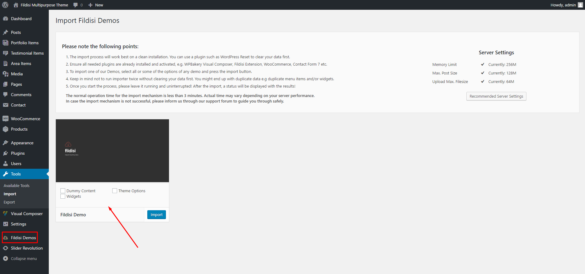
Home & Blog Page
Create a new page from Pages > Add New. Give a title, like 'Home', add the elements and settings you wish and then publish it. Next, create another page with the title you want for your blog. You do not need any content for your main blog page. The next thing is to tell WordPress to use your pages appropriately. Go to Settings > Reading and set the 'Front page displays' to 'A static page'. Set the home page you just created as the 'Front page', and the blog page you created as the 'Posts page' and save your changes.Your Home and Blog pages are ready to go!
When you set a page as your blog through the above-mentioned way you can select the style you wish in Theme Options > Blog Options.
Changes there will also affect Archives / Categories / Tags overview pages.
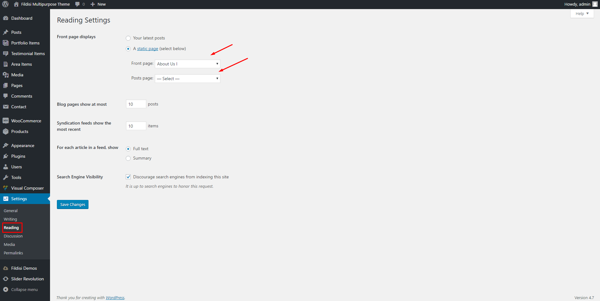
Menu System
Fildisi comes with two custom menus, one positioned in the header area(Header Menu) and the other in the copyright area(Footer Menu). To set up your custom menus simply:- Go to Appearance > Menus.
- Enter your menu name.
- Click the Create Menu button.
- Add items to your menu by using the widgets on the left side.
- Save your menu.
- Click Manage Locations.
- Attach it to the location you prefer (Header or Footer) and save again!
Mega Menu Built-in System
You can easily convert any submenu you want into mega menu by selecting from the drop down menu the columns you need for your mega menu. For example megamenu column-3. See the picture below.
Menu Button Item
You can easily create colored menu buttons with the wording you want in any menu item of your menu. You can set the colors you prefer, primary colors are included, for the background and the hover color. See the picture below.
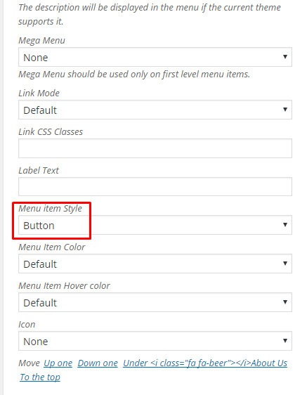
Labeled Menu Item
You can easily create labels with the wording you want in any menu item of your menu. Just add your text in the Label Text field. See picture below.
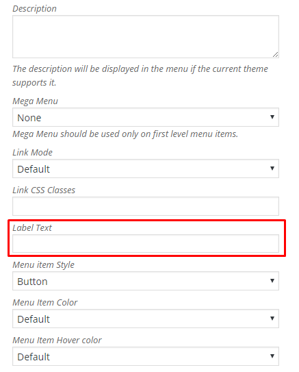
Anchor Menu / One Page Menu
Additionally, Fildisi offers the Anchor Menu per page option. Notice that, anchor menus are optimal for navigation within one page. To create such a menu in a page please do as follows.- Add Section IDs (e.g., idname1) in Rows you want to use in your menu.
- Create a menu with the usual way (Appearance > Menus).
- Add as menu items custom links of the form: http://www.site.com/pagename/#idname1
- Save menu and use it by selecting it from the Page Options of the page (Anchor Navigation Menu or Main Navigation Menu).
In the exact same way you can create one such menu for the Header Menu as well, so that you have a One Page site.
Set the Home Button in One Page version
You can set a home button (with the behaviour of the back to top button) by creating a custom link with the following URL: #eut-goto-header See the picture below.
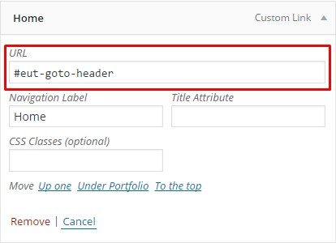
Theme Options
Fildisi Option panel is built with the renowned Redux Framework and gives you many configuration options in a user-friendly environment. Click the Theme Options under Appearance from the main WordPress navigation and then you will be able to access and enjoy many core features of Fildisi. All the options have detailed descriptions in order to explain their purpose.Fildisi’s main philosophy is that the user can have the power to make global settings from Theme Options on how to change the appearance of each Post format ( Pages/Posts) and in addition to be able to override almost everything through the Single Post formats (Pages/Posts). For example: Under Theme Options > Page Options you can select on whether you wish your Page header to overlap the content and select the Header Style you prefer (Default/Light/Dark). That means that the settings you will make will affect every single page of your site. In a creation of a Page, you can surely override this selection (as and most of them). This is the Fildisi Magic!
Fildisi Header
For a better grasp of the full potential of the theme, it is worth having a look at the philosophy behind the Header. The Header in Fildisi does not have predefined styles (like most themes), but the elements can be moved independently from each other. The elements one can add on Header may be the following:- Logo
- Menu
- Menu Elements (On/Off & Add various elements)
- TopBar Area (On/Off & Add various elements)
Last but not least, Fildisi provides 3 different Header Modes that you can find under Theme Options > Header Options > Header Mode. The Default Header Mode, the Logo on Top Mode and the Side Mode. All modes have their own settings (colors, logos etc).
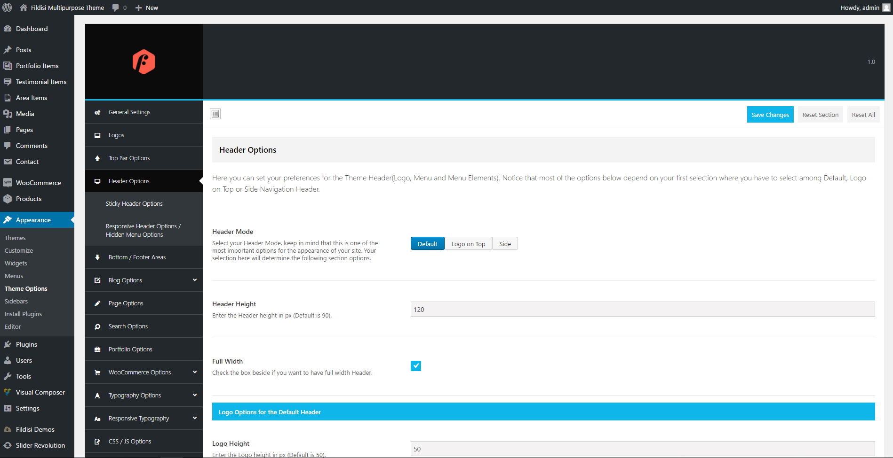
Don't forget that above your content you can set the default titles (posts, pages),
the Feature section area ( available in pages and posts) and the Anchor menu ( field bar in posts and pages ) option.
Fildisi Layouts
Fildisi provides 3 different layouts you can select from in Theme Options > General Settings.- Stretched Layout
- Boxed Layout
- Framed Layout
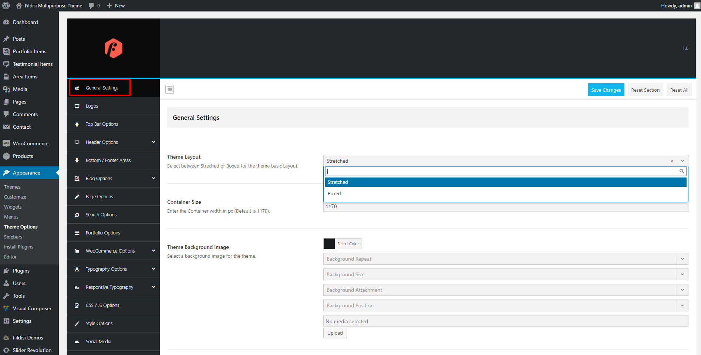
Fildisi Footer
Fildisi provides multiple footer layouts that you can choose from. You can select various column layouts or have a single column if you wish. Go to Theme Options > Footer Options to build your footer.Afterwards the creation of your footer layout, you will probably want to add your content. Simply go to Appearance > Widgets. Drag any of the provided widgets to the footer widget areas (Footer 1-4), order and reorder them as you wish and customise the settings.
In the Copyright Area you can add text (TinyMCE), socials and menu, centered or in the left-right corners.
Typography Options
This is a fully customizable font-related section.You can change the fonts and their style according to your tastes/needs for almost every single individual case. The font-sections are divided in such way, so you can easily find the font you seek to customize. A truly unique feature of Fildisi is the Responsive Typography. You can fully customize the font-size for devices whether it is a tablet (in both landscape & portrait) or a mobile device. Let’s see what is the Responsive Typography concept about. First of all, you set a Size Threshold of a given device.The size Threshold defines the minimum value point from which on the Responsive size ratio percentage will take effect.In other words in order to make use of a given Size Ratio percentage, the default font size under the Typography Options should be equal or larger than the Size Threshold, otherwise there will be no effect at all.You have three sections that are customizable:- The Responsive Headings, that define the Headings H1-H6
- The Responsive First group, that define the Title elements: Page / Post / Feature Section Titles
- The Responsive Second group, that define the Description elements: Page / Post / Feature Section Descriptions & Leader Text, Subtitle Text, Link Texts and Buttons.
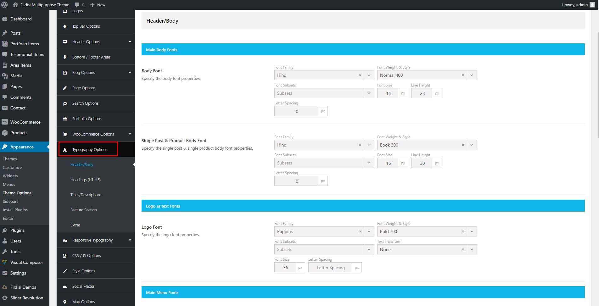
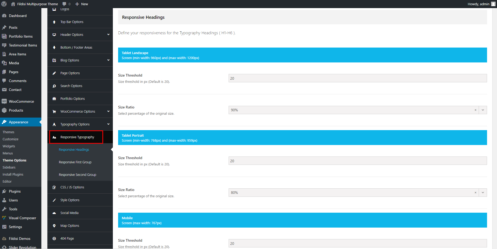
Page Options
Let's create a new page by following the usual WordPress steps:- Go Pages > Add New
- Give the page title
- Add your content (use the amazing Visual Composer)
Page Options
Here you can set everything you need apart from the content of the pages(you will use the awesome Page Builder for this). So, you will find the following, organized into tabs, sections:- Header/Main Menu
- Title/Description
- Content/Sidebars
- Sliding Area
- Scrolling Sections
- Extras
- Visibility
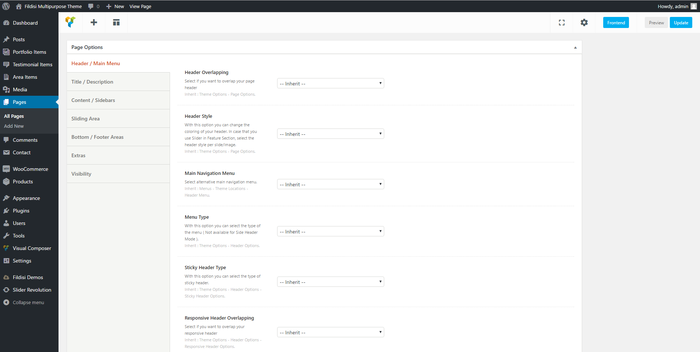
Keep in mind that "Inherit" means that the settings from the options panel of Fildisi (Theme Options > Page Options) will occur.
Under Content/Sidebars tab there are options to set up the paddings (spaces) among the content area (top, down) and the Header/Footer. For example if you need to collapse the first row of your content area or just your content area with the Header (or Feature/Title) you need to set the Top Padding to 0.
Feature Section
Fildisi gives you the chance to add one of five special elements and to integrate your header with the feature section (Header Integration option). You can select among:- Title
- Image
- Slider
- Video
- Google Map
Note: Here you can use any of the 3 different menus (Default/Light/Dark) with separate logos that Fildisi offers.
Create Posts
To create a Post, go to:- Posts > Add New
- Add a title
- Add some content
- Add categories and some tags
Furthermore, you can set up the classic options (layout, sidebar, disable various post elements etc), just like in page options, under the 'Post Options' section.
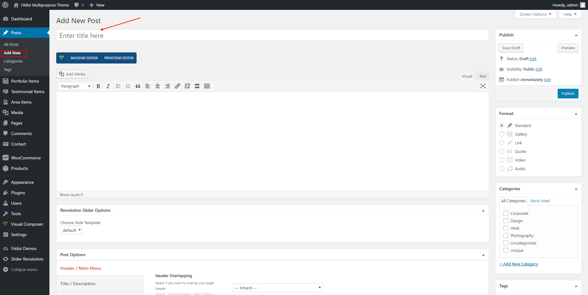
Post Options
Here you can set everything you need (just like in Page Options) apart from the content of the posts (you can still use the awesome Page Builder for this). So, you will find the following, organized into tabs, sections:- Header/Main Menu
- Title/Description
- Content/Sidebars
- Sliding Area
- Extras
- Visibility
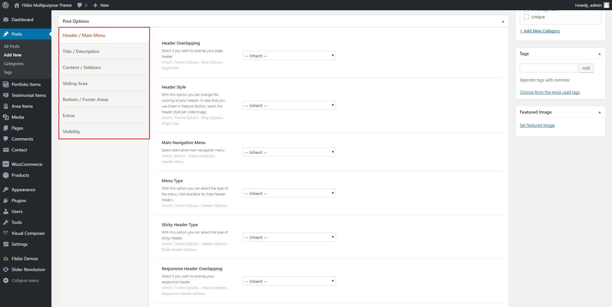
Standard Format Options
These are options that are related to every single post format that someone uses. For example, there are different options for the standard post format and different ones for the quote post format. It is of great interest to use the Fildisi Style in standard post format if you are to use either grid or masonry overview.Feature Section
Last but not least, you can use the Feature Section in your single posts just like in pages. Fildisi gives you the chance to add one of four following special elements. You can select among:- Title
- Image
- Slider (on the fly creation)
- Video
- Google Map
In case you use Standard post format (the most common post format), just upload a featured image via the WordPress classic meta box (at the lower right corner).
You can enable/disable the Feature Section for each one of the custom post types (Pages, Posts, Portfolio Items) in Theme Options > Miscellaneous > Feature Section Post Types.
Portfolio Options
To create a Portfolio Item, go to:- Portfolio > Add New
- Add a title
- Add some content (you can use Visual Composer)
- Add description for the title
- Add more details for the sidebar
- Add categories and item fields (extra info in a list style)
- Upload a featured image for your item
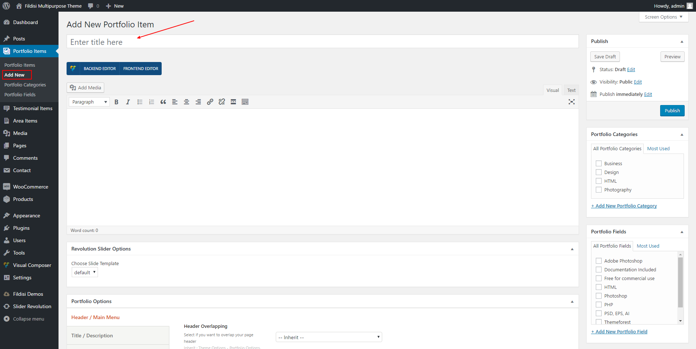
These are the basic settings you need to promote a work item in a very simple way. Furthermore, just below the editor, Blade provides for the portfolio items the same settings with the single pages. Finally, you can set some more advanced options for your portfolio media. Let’s see them briefly:
Featured Image
This is when you simply want only one image for your item (in overview and single view).Classic Gallery
Add the images you prefer and you’ll have a gallery for your item.Vertical Gallery
Add the images you prefer and you’ll have a vertical gallery for your item.Slider
Add the images you prefer and you’ll get a slider presentation for your item.YouTube/Vimeo
Add the video you prefer from YouTube/Vimeo and you’ll have it in the media section.HTML5 Video
You can also add (after upload it) an HTML5 Video.Embed Video
You can enter the embed code of your video.None
That means you disable the media and you prefer to use the feature section or the builder or simply no media.
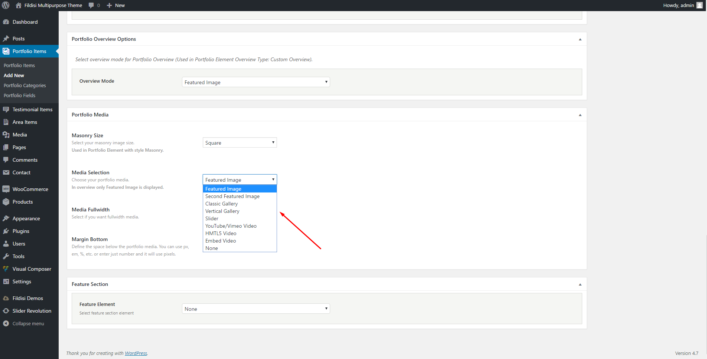
Feature Section
Last but not least, you can use the Feature Section in your single portfolio items just like in pages. Blade gives you the chance to add one of four special elements. You can select among:- Title
- Image
- Slider (on the fly creation)
- Video
- Google Map
Note: You can enable/disable the Feature Section for each one of the custom post types (Pages, Posts, Portfolio Items) in Theme Options > Miscellaneous > Feature Section Post Types.
Rows & Columns
Setting your Rows
It is very important for the user to know the options Fildisi offers in Rows in order to place correctly the elements given. Options are plenty; let’s have a look:General
Section ID
Give a name/ID for the section (row). This will be useful if you need an anchor menu or create a one page (see Anchor Menus in this documentation).Section Title
Give a title for the section (row). This will be useful if you use the full page template with the side dot navigation (see Menus in this documentation).Font Color
Choose the color for your fonts so texts will be readable.Heading Color
Set the color for your headings. Select among default, light, dark or one of the primary colors.Extra Class
In case that you like to use one of your classes.Section Options
Section Type
Select among 2 different row types.- Fullwidth Background - the background color will be stretched, this is the default option.
- Fullwidth Element - the content of this row will be stretched and not just the background.
Section Window Height
Select if you like your section has the window height (just for this section and for all page's sections.Background Type
Select the background for your section (row). You can use none, color, gradient color, image or hosted video and set your preferences. In case you use a background image, you can have default mode, parallax effect, fixed image animated image or even use the image as pattern.Top Padding
You can easily adjust the padding top of your section (row).Bottom Padding
You can easily adjust the padding bottom of your section (row).Bottom Margin
Set the margin-bottom of your section (row).Inner Columns
Columns Gap
Here you are able to select the gap anmong columns in this row.Equal Column Height
The default option is None here and Fildisi provides two more: Equal Height Columns and Equal Height Columns & Middle Content. Recommended for multiple columns with different background colors. Additionally you can set your columns content in middle. Finally, if you need some paddings in your columns, please place them only in the column with the largest content.Responsiveness
Here you can hide any row/section you prefer on devices. You can hide rows on tablet, both landscape and portrait orientation, and on mobiles.Desktop Visibility
If selected, the row will be hidden on desktops/laptops.Tablet Landscape Visibility
If selected, the row will be hidden on tablet devices with landscape orientation.Tablet Portrait Visibility
If selected, the row will be hidden on tablet devices with portrait orientation.Mobile Visibility
If selected, the row will be hidden on mobile devices.Separators
Top Separator
Select the separator you need for the top of your row. Then define its size (Small, Medium, Large, Extra Large) and its color.Bottom Separator
Select the separator you need for the bottom of your row. Then define its size (Small, Medium, Large, Extra Large) and its color.Scrolling Section Options
These options will take affect only if you use the Scrolling Full Screen Sections template.Header Style
You can select the Header style, between Light and Dark, for this specific row.Scrolling Section Title
Give a title for this row for the side dot navigation.
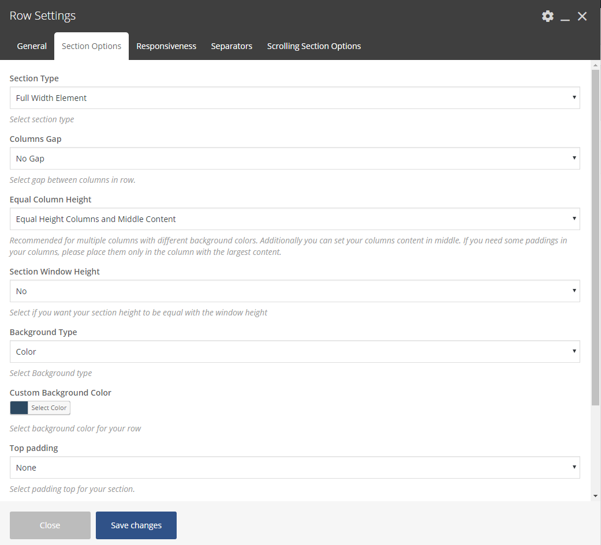
Setting your Columns
General
Extra Class
In case that you like to use one of your classes.Font Color
Choose the color for your fonts so texts will be readable. This will override your row color selection.Heading Color
Set the color for your headings. Select among default, light, dark or one of the primary colors. This will override your row color selection.The main parameter you have to set in columns(general tab) is the font color for the column.
Design Options
Here you can set background colors, paddings, margins and borders for the columns content.Effects and Positions
Vertical Content Position
Select the vertical position of the content. Note this setting is affected only if you have set Equal Height Columns under: Row Settings > Inner Columns > Equal Column Height.Column Effect
Amazing and Unique feature. Select the effect for your column amont the following:- None
- Vertical Parallax
Change Columns Position
Select if you want to change the column position by setting YES here to get the following options:1.Top Position
Define the top position for the column. Select among values 1x to 6x and -1x to -6x (consider that x is equal to 30pixels). With this method the spaces are being resized proportionally on devices.2.Bottom Position
Define the bottom position for the column. Select among values 1x to 6x and -1x to -6x (consider that x is equal to 30pixels). With this method the spaces are being resized proportionally on devices.3.Right Position
Define the right position for the column. Select among values 1x to 6x and -1x to -6x (consider that x is equal to 30pixels). With this method the spaces are being resized proportionally on devices.4.Left Position
Define the left position for the column. Select among values 1x to 6x and -1x to -6x (consider that x is equal to 30pixels). With this method the spaces are being resized proportionally on devices.5.Z Index
Specify the z-index value of this column to create amazing designs.Width & Responsiveness
First of all, you can change the width of your column. Additionally, you are able to set the responsive behaviour of your column in various devices or even to hide columns.Last but not least, based on your preferences under Effects and Positions you will be able to specify the column behavior on devices in order to reset the column position or disable the parallax on tablet etc.
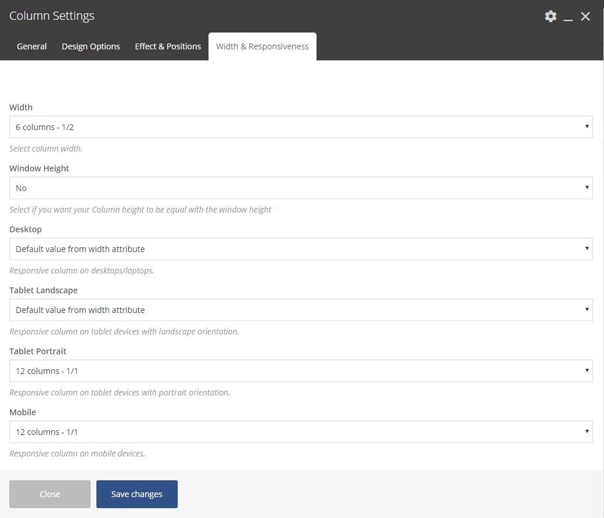
Elements
Fildisi comes with the Visual Composer, a visual layout builder that allows you to forget about syntax of shortcodes and create multiple layouts within minutes without writing a single line of code! You can edit, delete, increase and decrease size of each item. Furthermore, you can reorder the elements,copy-paste and save templates. It has very simple and instinctive interface! Don't forget to read the Rows/Columns section in this documentation, where you will discover the amazing responsive possibilities. As you can easily see, Fildisi's elements are especially handmade for the theme’s preferences and they harmoniously use the amazing visual interface of the composer. That means you will not find just one Visual Composer copy in Fildisi!Let's take a brief look at the elements:
Title
This element will create a title that you can use to introduce a new section in a page or even an element. You can set the alignment, the header you prefer and the line-style(if you use a line).Text Block
Add the text you like by using the classic TinyMCE. Additionally, style your text as Leader text or Subheading text to create more interesting text areas.Divider
With this element you can create a divider (line, double line, dashed line or back to top) to better separate your elements and sections. Additionally, you can split you pages by using full-width dividers.Custom Heading
This is what you read. You are able to select any Google font you like, set the size, the tag, align, color, line height and set the link URL.Empty Space
Add a Blank space with the height you prefer.Quote
Add your text, set the animation you like and your quote text is ready to be published.Dropcap
Two styles for dropcaps. Add your text, choose your style, set the animation and save.Button
The button element is an easy way to add a styled button to your page. Just choose the appropriate type(simple,line), size, shape and color and icons from 5 different Font libraries. Finally, fill out the other fields (text, link) and off you go!Icon Box
Another element with multiple options. Firstly, select the icon size and the icon shape. Secondly, you can use any font from 5 different Font libraries, upload a png icon or even write a character(letter or number)! Give title, text, link, align, box color, advanced hover (if you like) and enjoy it!Icon
Just like the Icon Box but with only a single icon and multiple options. Use any font from 5 different Font libraries, select the icon size, shape, colors, align, set the link.Media Box
Media for Fildisi means image, video or map. Combine one of these with title, text, link and you're ready!Image Text
With this shortcode you can simply upload an image(with a video popup if you like), title,text and button(any type).Slogan
The slogan element creates a slogan with two buttons. Simply add title, subtitle, text, line-style and buttons(1 or 2).Call-Out
With call-out element you're able to choose your preferred style, give a title, your text, button and off you go.Single Image
Upload a single image and give the align, animation, link you wish. You can have Image, Image Link, Image popup and popup video.Slider
This element is not just a simple slider. Upload your images, select the navigation type and color. Set if you want autoplay, the slideshow speed, the image crop/resize! Don't forget to set it to full width element, it's great!Gallery
The Gallery element has 2 different styles for showing your image galleries with various options. Classic Grid and Masonry with multiple options for hovers, overlays, columns and more. You can easily create full width galleries. Keep in mind that in Grid and Carousel style you are able to select the image crop.Message Box
With this element you create a message text with an icon and background color.Google Map
Give the Latitude/Longitude, set the zoom you wish for your map. Upload the marker you like, set the map height.Video
You can just add a video(YouTube, Vimeo), even full width video.Accordion
This element creates an accordion panel that expands when the user clicks on the title to reveal more information.Tab
Simply add horizontal tabs as needed until you are ready.Tour
Simply add vertical tabs as needed until you are ready.Testimonial
This element creates a nicely slider out of your testimonials items. Go Testimonial > Testimonial Items and create your testimonials. Afterwards, add the testimonial element and define the various settings like categories, speed, navigation and more.Pricing tables
Pricing tables is used to display any subscription options in an appropriate column. Create the tables you wish (don't overdone with this, 4 tables per row are enough) and add your data.Progress Bar
This element creates horizontal bars that get animated in accord with the percent given; the best way to show your skills in a visual way with multiple styles.Counter Element
This element can be used to quickly create animations that display numerical data in a more interesting way. You can set colors, icon, title, text and more.Social Share
With this element you can simply add social media icons anywhere in your pages in multiple styles.Typed Text
Add your prefix text, your suffix text and add-style the Typed Text which makes your text moves.Team Member
This element takes in a quick profile for a team member/employee and formats it attractively. Add the information you wish, it's so simple.Advanced Promo
This is a special element. You can easily create a nicely colored tabbed sections (rows) with image (logo), text and button. Just create multiple Promo Advanced elements in different rows, define the colors(backgrounds) you prefer and collapse these rows. This creates very appealing and interesting areas to show off your partners or anything else you wish. We recommend to use the Promo Advanced element on pages without sidebars.Blog Element
The Blog element is undoubtedly one of the most important elements which most of the users will probably use. Based on that fact, Fildisi really offers multiple options for this element. Let's see them briefly, starting with the basic styles.- Large Media
- Small Media
- Masonry
- Grid
- Carousel
Large Media & Small Media
- Set the Image Mode. You can select if you need a cropped featured image or a resized one for this blog overview.- You can use only the Featured image in the blog overview and not the main media you have added in the single post.
- Define the Excerpt length for the texts, a very convenient option since you absolutely need different excerpt in the large media style than the grid with 4 columns for example.
- Add More Button if you like.
- Enable the Blog Filter in order to have filters just like the Portfolio Element.
- Set your preferable blog order (ID, Slug, Title) and order it Ascending or Descending.
- Align the Blog Filter.
- Hide the comments.
- Define the posts per page, the pagination.
- Set the order of the posts.
Masonry & Grid Style
- You can use only the Featured image in the blog overview and not the main media you have added in the single post.- Set the Masonry Mode, select between Without Shadow and With Shadow mode. This is just a style option.
- You can use only the Featured image in the blog overview and not the main media you have added in the single post.
- Set the Columns for the Masonry Blog, the options are from 2 to 5.
- Set the Tablet Landscape Columns.
- Set the Tablet Portrait Columns.
- Set the Mobile Columns.
- Define the Excerpt length for the texts.
- Add More Button if you like.
- Enable the Blog Filter in order to have filters just like the Portfolio Element.
- Set your preferable blog order (ID, Slug, Title) and order it Ascending or Descending.
- Align the Blog Filter.
- Enable a Loader for your overview.
- Disable the Pagination.
- Hide the comments.
- Define the posts per page, the pagination.
- Set the order of the posts.
The only difference in the options between the Masonry and Grid style is that you can set the Image Mode (Auto Crop or Resize) in the Grid style.
Carousel Blog
Easily create a Blog Carousel. Set the number of posts per page, the navigation, the excerpt, the slideshow speed.Leader Post
This element was specifically created for the needs of this Blog theme. Select between the Classic and the Fildisi style, define the number of the posts, categories and many more.Contact Form
With this element you can simply use any Contact Form 7 you've created. When using the Contact Form, the default layout is to have one field per row. However, you can have multiple fields in the same row with different styles by adding some HTML markup. For more details visit this related article on our Knowledge Base.Pie Chart
With this element you can create appealing pie charts with multiple options.Flexible Carousel
With this element you can create very appealing and interesting carousels to show off multiple elements. Add the Flexible Carousel in a row and click to start adding elements into it in order to have various content in the carousel. Create columns, define the responsiveness, select your navigation type and many more. Impressive?
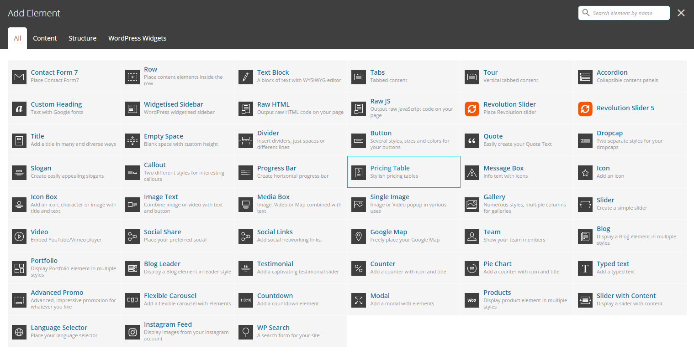
It is worth noting that this is a complicated element so we suggest to use only the elements that you first see when you click the Add button.
In the majority of the elements you can define CSS animations with time delay.
Sidebars / Widgets
Sidebar Position
First of all, you can define your default layout (full width, left or right) separately for pages, blog page and single posts via the option panel of Fildisi. Notice that you can select your layout for pages, posts and portfolios, independently in page options, post options and portfolio options.Widget Areas
There are 4+1 predefined Widget Areas included in Fildisi: These are four Footer Sidebars and the Main Sidebar.Create custom Widget Areas
You also have the option to create your own sidebars:- Go to Appearance > Sidebars
- Write a name for the widget area and click Add New
- The new widget will be created, click Save Changes and it's ready
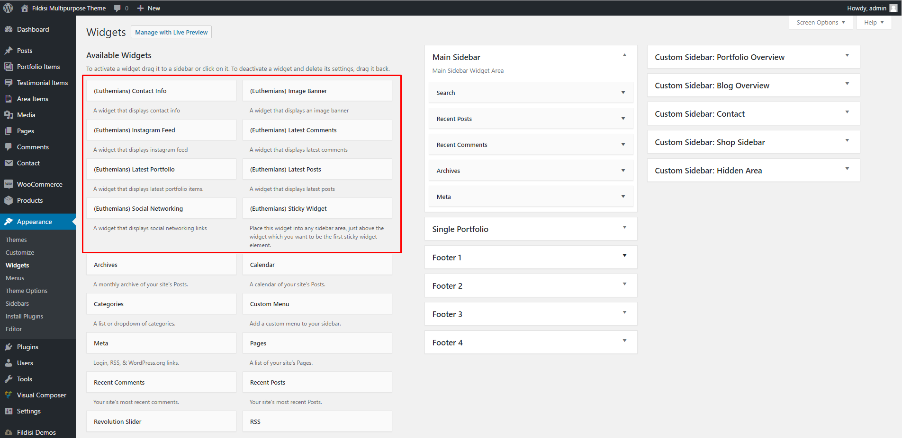
Keep in mind that with Fildisi gives you the possibility to use a sidebar with a full width element. That's design without restrictions!
Image Sizes
Below you can see the image sizes from the functions.php file. We recommend uploading images of exactly the sizes listed below so as WordPress will not resize your images. This will give you better image performance and save some server bandwidth.add_image_size( 'fildisi-eut-large-rect-horizontal', 1170, 658, true );
add_image_size( 'fildisi-eut-small-square', 560, 560, true );
add_image_size( 'fildisi-eut-medium-square', 900, 900, true );
add_image_size( 'fildisi-eut-small-rect-horizontal', 560, 420, true );
add_image_size( 'fildisi-eut-small-rect-vertical', 560, 745, true );
add_image_size( 'fildisi-eut-medium-rect-vertical', 840, 1120, true );
add_image_size( 'fildisi-eut-medium-rect-horizontal', 900, 675, true );
add_image_size( 'fildisi-eut-fullscreen', 1920, 1920, false );
SEO - Search Engine Optimization
Fildisi is built with SEO best-practices in mind. We use heading tags (H1,H2,H3...) for titles, main content and logo which is good practice for search engine site. It goes without saying that Fildisi uses valid HTML5 code and CSS3. Search engines would love the clean code of Fildisi. Additionally, Fildisi uses internal site linking, which is vital for search engines (two predefined navigation menus, related portfolios etc). Fildisi is also fully compatible with the two most popular WP SEO plugins, All in One SEO and WordPress SEO by Yoast, in case you need something more specific for your site optimization. Be sure that we have done our best for your site Google ranking.Translation & WPML Multilingual Plugin
Fildisi is WPML ready in case you need it. We also offer one predefined position for the language selector, in the top bar of our Theme (if it’s enabled). Alternatively, you can add it in the header menu. So you’re able to easily use the WPML without deforming the basic theme style.Purchasing and Installing WPML
If you finally decide to use WPML (the most famous multilingual WP Plugin) you can purchase it from here. After installing and activating both Fildisi and WPML you can find a getting started guide in Getting started with WPML.How to set and translate main features of Fildisi
- Using translation management. Read more details
- Translation Management & Features. Read more details
- Translating URL slugs. Read more details
How to translate strings coming from Fildisi
- How to scan the strings of Fildisi. Read more details
- How to translate the strings of Fildisi. Read more details
WPML language switcher and Fildisi
Fildisi also offers predefined position for the language switcher, in the top bar of our Theme. Additionally, you can add the language switcher in the header menu or if you need to adjust a custom language switcher. There is a specific reference in here.Conclusion
Undoubtedly, Euthemians team recommends the usage of WPML with Fildisi if you wish to make your WP site runs multilingual with the easiest and safest way.How to translate the strings without WPML
First of all, we recommend to use the PO Edit to edit and/or translate the static strings of Fildisi. When you install it follow the steps below:- Go to /fildisi/languages/ folder, duplicate the en_US.po file and rename it using the appropriate language code (for example if you translate to French you need to re-name it as fr_FR.po). You can find all the codes here.
- Then open the renamed .po file with PO Edit. Translate the strings in your language into the “Translation” column.
- Click to save the file when you finish the translation. Then an .mo file will be created in the same directory (just like en_US.mo file).
- Upload these 2 files in /fildisi/languages/ folder.
- Finally, you need to go to Settings > General and at the bottom of this page select your preferred language.
Note: Keep in mind that you do not need to translate all the theme’s strings, you can freely choose what to translate.
Interested in translating a language for Fildisi?
We would be grateful if you could help us translating Fildisi in multiple languages. If your language isn’t included in Fildisi and you translate it on your own, we’d really appreciate it if you could send it to us. In addition, we will include it in the next update of Fildisi, so you won’t have to re-upload it. Finally, this will also help out many other users of Fildisi.CSS & JavaScript files
CSS files used in this template:- elements.css contains the basic styles for elements, widgets.
- theme-style.css contains the basic styles for theme.
- responsive.css contains the responsive behavior of Fildisi.
- font-awesome.min.css contains the font-awesome style.
- main.js
- plugins.js
- maps.js
- modernizr.custom.js